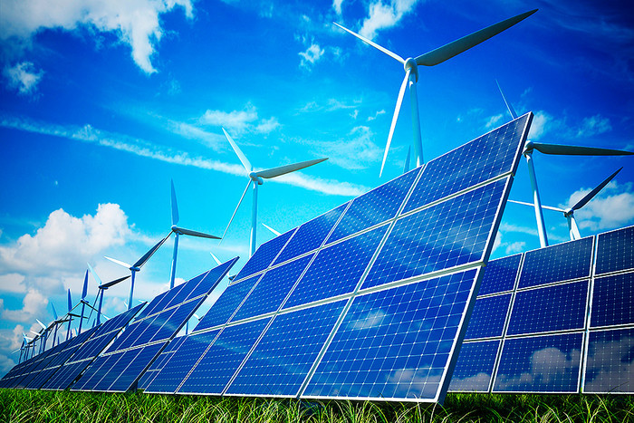

Краткий обзор основных видов альтернативной электроэнергетики

Альтернативная энергетика – совокупность перспективных способов получения энергии, которые распространены не так широко, как традиционные, однако представляют интерес из-за выгодности их использования при низком риске причинения вреда экологии.
Альтернативный источник энергии – способ, устройство или сооружение, позволяющее получать электрическую энергию (или другой требуемый вид энергии) и заменяющий собой традиционные источники энергии, функционирующие на нефти, добываемом природном газе и угле.
Виды альтернативной энергетики: солнечная энергетика, ветроэнергетика, биомассовая энергетика, волновая энергетика, градиент-температурная энергетика, эффект запоминания формы, приливная энергетика, геотермальная энергия.
Солнечная энергетика – преобразование солнечной энергии в электроэнергию фотоэлектрическим и термодинамическим методами. Для фотоэлектрического метода используются фотоэлектрические преобразователи (ФЭП) с непосредственным преобразованием энергии световых квантов (фотонов) в электроэнергию.
Термодинамические установки, преобразующие энергию солнца вначале в тепло, а затем в механическую и далее в электрическую энергию, содержат "солнечный котел", турбину и генератор. Однако солнечное излучение, падающее на Землю, обладает рядом характерных особенностей: низкой плотностью потока энергии, суточной и сезонной цикличностью, зависимостью от погодных условий. Поэтому изменения тепловых режимов могут вносить серьезные ограничения в работу системы. Подобная система должна иметь аккумулирующее устройство для исключения случайных колебаний режимов эксплуатации или обеспечения необходимого изменения производства энергии во времени. При проектировании солнечных энергетических станций необходимо правильно оценивать метеорологические факторы.
Геотермальная энергетика – способ получения электроэнергии путем преобразования внутреннего тепла Земли (энергии горячих пароводяных источников) в электрическую энергию.
Этот способ получения электроэнергии основан на факте, что температура пород с глубиной растет, и на уровне 2–3 км от поверхности Земли превышает 100°С. Существует несколько схем получения электроэнергии на геотермальной электростанции.
Прямая схема: природный пар направляется по трубам в турбины, соединенные с электрогенераторами. Непрямая схема: пар предварительно (до того как попадает в турбины) очищают от газов, вызывающих разрушение труб. Смешанная схема: неочищенный пар поступает в турбины, а затем из воды, образовавшийся в результате конденсации, удаляют не растворившиеся в ней газы.
Стоимость "топлива" такой электростанции определяется затратами на продуктивные скважины и систему сбора пара и является относительно невысокой. Стоимость самой электростанции при этом невелика, так как она не имеет топки, котельной установки и дымовой трубы.
К недостаткам геотермальных электроустановок относится возможность локального оседания грунтов и пробуждения сейсмической активности. А выходящие из-под земли газы могут содержать отравляющие вещества. Кроме того, для постройки геотермальной электростанции необходимы определенные геологические условия.
Ветроэнергетика – это отрасль энергетики, специализирующаяся на использовании энергии ветра (кинетической энергии воздушных масс в атмосфере).
Ветряная электростанция – установка, преобразующая кинетическую энергию ветра в электрическую энергию. Состоит она из ветродвигателя, генератора электрического тока, автоматического устройства управления работой ветродвигателя и генератора, сооружений для их установки и обслуживания.
Для получения энергии ветра применяют разные конструкции: многолопастные «ромашки»; винты вроде самолетных пропеллеров; вертикальные роторы и др.
Производство ветряных электростанций очень дешево, но их мощность мала, и их работа зависит от погоды. К тому же они очень шумны, поэтому крупные ветряные электростанции даже приходится на ночь отключать. Помимо этого, ветряные электростанции создают помехи для воздушного сообщения, и даже для радиоволн. Применение ветряных электростанций вызывает локальное ослабление силы воздушных потоков, мешающее проветриванию промышленных районов и даже влияющее на климат. Наконец, для использования ветряных электростанций необходимы огромные площади, много больше, чем для других типов электрогенераторов.
Волновая энергетика – способ получения электрической энергии путем преобразования потенциальной энергии волн в кинетическую энергию пульсаций и оформлении пульсаций в однонаправленное усилие, вращающее вал электрогенератора.
По сравнению с ветровой и солнечной энергией энергия волн обладает гораздо большей удельной мощностью. Так, средняя мощность волнения морей и океанов, как правило, превышает 15 кВт/м. При высоте волн в 2 м мощность достигает 80 кВт/м. То есть, при освоении поверхности океанов не может быть нехватки энергии. В механическую и электрическую энергию можно использовать только часть мощности волнения, но для воды коэффициент преобразования выше, чем для воздуха – до 85 процентов.
Приливная энергетика, как и прочие виды альтернативной энергетики, является возобновляемым источником энергии.
Для выработки электроэнергии электростанции такого типа используют энергию прилива. Для устройства простейшей приливной электростанции (ПЭС) нужен бассейн – перекрытый плотиной залив или устье реки. В плотине имеются водопропускные отверстия и установлены гидротурбины, которые вращают генератор.
Во время прилива вода поступает в бассейн. Когда уровни воды в бассейне и море сравняются, затворы водопропускных отверстий закрываются. С наступлением отлива уровень воды в море понижается, и, когда напор становится достаточным, турбины и соединенные с ним электрогенераторы начинают работать, а вода из бассейна постепенно уходит.
Считается экономически целесообразным строительство приливных электростанций в районах с приливными колебаниями уровня моря не менее 4 м. Проектная мощность приливной электростанции зависит от характера прилива в районе строительства станции, от объема и площади приливного бассейна, от числа турбин, установленных в теле плотины.
Недостаток приливных электростанции в том, что они строятся только на берегу морей и океанов, к тому же они развивают не очень большую мощность, да и приливы бывают всего лишь два раза в сутки. И даже они экологически не безопасны. Они нарушают нормальный обмен соленой и пресной воды и тем самым – условия жизни морской флоры и фауны. Влияют они и на климат, поскольку меняют энергетический потенциал морских вод, их скорость и территорию перемещения.
Градиент-температурная энергетика. Этот способ добычи энергии основан на разности температур. Он не слишком широко распространен. С его помощью можно вырабатывать достаточно большое количество энергии при умеренной себестоимости производства электроэнергии.
Большинство градиент-температурных электростанций расположено на морском побережье и используют для работы морскую воду. Мировой океан поглощает почти 70% солнечной энергии, падающей на Землю. Перепад температур между холодными водами на глубине в несколько сотен метров и теплыми водами на поверхности океана представляет собой огромный источник энергии, оцениваемый в 20-40 тысяч ТВт, из которых практически может быть использовано лишь 4 ТВт.
Вместе с тем, морские теплостанции, построенные на перепаде температур морской воды, способствуют выделению большого количества углекислоты, нагреву и снижению давления глубинных вод и остыванию поверхностных. А процессы эти не могут не сказаться на климате, флоре и фауне региона.
Биомассовая энергетика. При гниении биомассы (навоз, умершие организмы, растения) выделяется биогаз с высоким содержанием метана, который и используется для обогрева, выработки электроэнергии и пр.
Существуют предприятия (свинарники и коровники и др.), которые сами обеспечивают себя электроэнергией и теплом за счет того, что имеют несколько больших "чанов", куда сбрасывают большие массы навоза от животных. В этих герметичных баках навоз гниет, а выделившийся газ идет на нужды фермы.
Еще одним преимуществом этого вида энергетики является то, что в результате использования влажного навоза для получения энергии, от навоза остается сухой остаток являющийся прекрасным удобрением для полей.
Также в качестве биотоплива могут быть использованы быстрорастущие водоросли и некоторые виды органических отходов (стебли кукурузы, тростника и пр.).
Эффект запоминания формы – физическое явление, впервые обнаруженное советскими учеными Курдюмовым и Хондросом в 1949 году.
Эффект запоминания формы наблюдается в особых сплавах и заключается в том, что детали из них восстанавливают после деформации свою начальную форму при тепловом воздействии. При восстановлении первоначальной формы может совершаться работа, значительно превосходящая ту, которая была затрачена на деформацию в холодном состоянии. Таким образом, при восстановлении первоначальной формы сплавы вырабатывают значительно количество тепла (энергии).